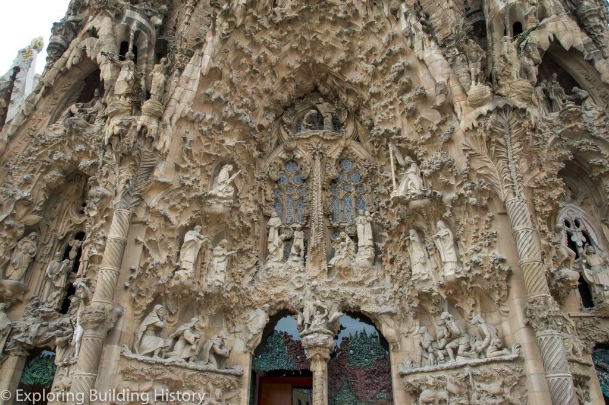
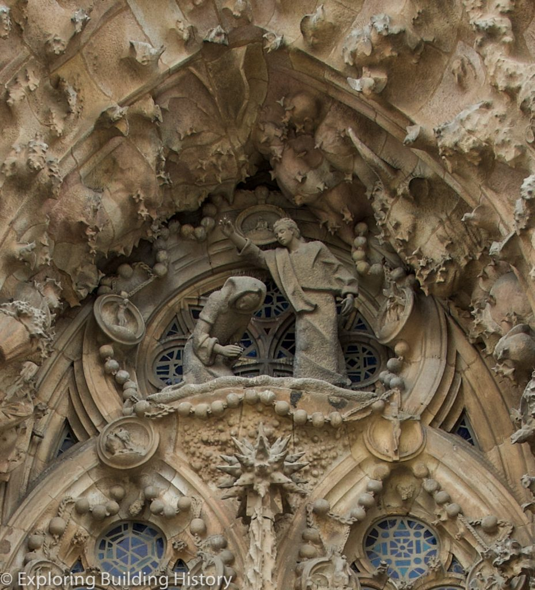
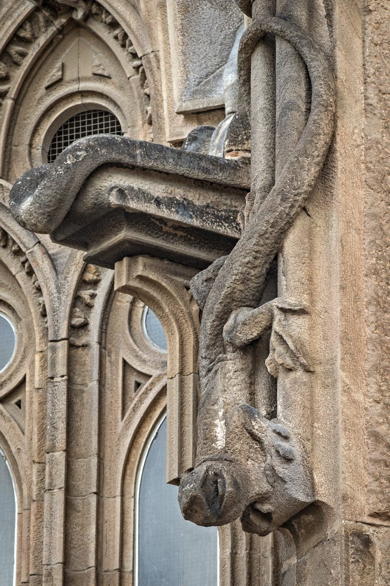
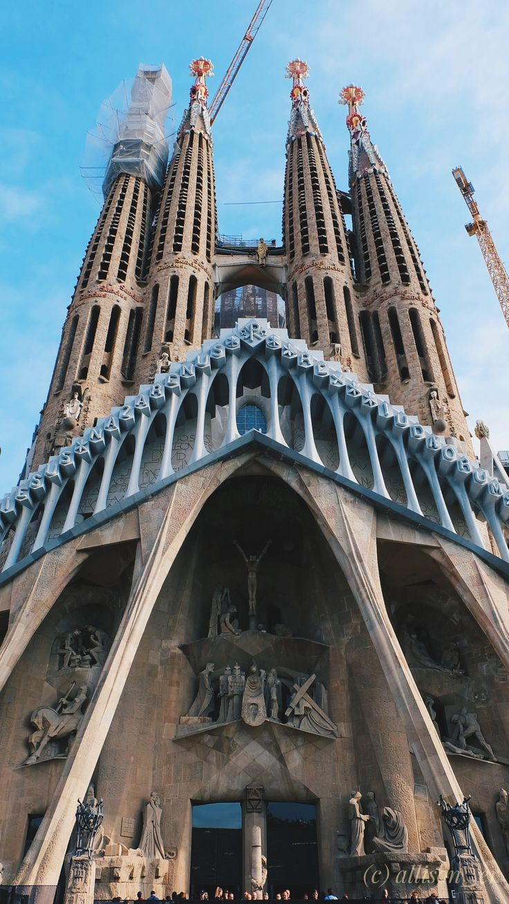
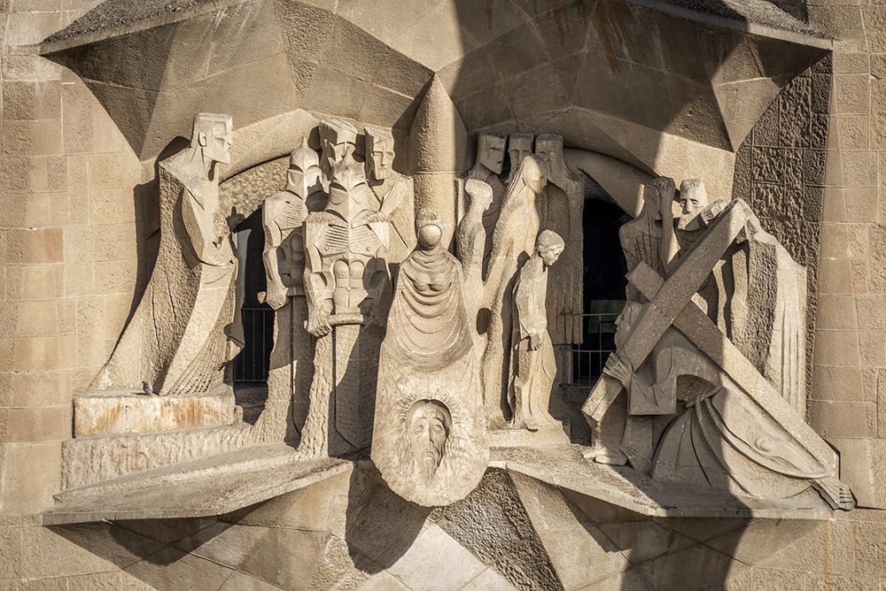
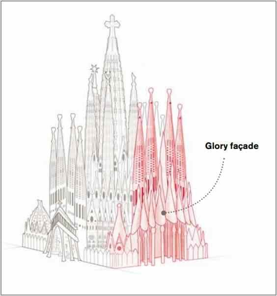

Biserica este proiectată să aibă trei fațade mari: fațada Nașterii Domnului la est, fațada Pasiunii la vest și fațada Gloriei la sud (incompletă).

Construită între 1893 și 1936, fațada Nașterii Domnului a fost prima fațadă finalizată. Dedicată nașterii lui Iisus, aceasta este decorată cu scene ce amintesc de elemente din viață. Caracteristică stilului naturalist al lui Gaudí, sculpturile sunt aranjate într-o manieră bogată și ornamentată, cu scene și imagini din natură, fiecare simbolizând ceva în felul său.


De exemplu, cele trei porticuri sunt separate de două coloane mari, iar la baza fiecărei coloane se află o broască țestoasă sau o țestoasă de mare (una reprezentând pământul și cealaltă marea; ambele sunt simboluri ale timpului, ca ceva fixat în piatră și neschimbător). În contrast cu figurile de țestoase și simbolistica lor, doi cameleoni pot fi găsiți pe fiecare parte a fațadei, simbolizând schimbarea.
Fațada este orientată spre răsăritul soarelui, în nord-est, un simbol al nașterii lui Hristos.

Fațada Patimilor a fost construită conform designului creat de Gaudí în 1917. Construcția a început în 1954, iar turnurile, construite pe un plan eliptic, au fost finalizate în 1976. Aceasta este deosebit de remarcabilă pentru personajele sale austere, suferinde, inclusiv figuri scheletice ale lui Hristos biciuit la stâlp și Hristos pe cruce. Aceste designuri controversate sunt opera lui Josep Maria Subirachs.
În contrast cu Fațada Nașterii, foarte decorată, Fațada Pasiunii este austeră, simplă și sobră, cu multă piatră goală, sculptată cu linii dure și drepte pentru a semăna cu oasele unui schelet. Dedicată Patimilor lui Hristos, suferinței lui Isus în timpul crucificării sale, fațada a fost concepută pentru a portretiza păcatele omului.

Orientată către apusul soarelui, simbolic pentru moartea lui Hristos, Fațada Pasiunii este susținută de șase coloane mari și înclinate, concepute pentru a semăna cu mușchii încordați. Deasupra se află un fronton piramidal, alcătuit din optsprezece coloane în formă de os, care culminează cu o cruce mare, împodobită cu o coroană de spini. Fiecare dintre cele patru turnuri este dedicat unui apostol (Iacob, Toma, Filip și Bartolomeu) și, la fel ca Fațada Nașterii, există trei porticuri, fiecare reprezentând virtuțile teologice, deși într-o lumină mult diferită.

Fațada Gloriei, a cărei construcție a început în 2002, va fi cea mai mare și mai monumentală dintre cele trei și va reprezenta ascensiunea omului către Dumnezeu. De asemenea, va reda diverse scene, cum ar fi Iadul, Purgatoriul, și va include elemente precum cele șapte păcate capitale și cele șapte virtuți cerești.
Această fațadă va avea cinci uși corespunzătoare celor cinci nave ale templului, iar cea centrală va avea o intrare triplă, oferind Fațadei Gloriei un total de șapte uși care vor reprezenta sacramentele:Botezul, Confirmarea, Euharistia, Pocăința, Hirotonirea, Căsătoria, Ungerea bolnavilor.